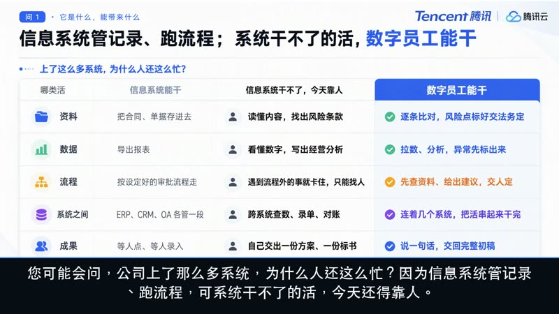

不是又一个聊天框，
是给每个岗位配一位数字员工
你只说清「要什么」，它自己拆步骤、查资料、写文档、连系统，最后交回一份能直接用的成果。
人定目标、人签结果；中间最费时的活，它接过去。
「把下周要拜访的三家客户，各出一份背景简报和拜访提纲，明早给我。」
先说人话：它跟聊天机器人、跟公司里的系统，差在哪
不用记新概念，记住一个分工就行：人定目标、人签结果；中间最费时的几步，数字员工接过去。下面这张表，是最快讲清楚的方式。
有岗位
放进销售、财务、法务，就干那个岗位的活。不是通用助手，是上岗。
能派活
不是你一步步操作它，是说清目标后，它自己规划路径并执行。
交成果
交回来的是能用的初稿和文件，不是「你可以这样做」的建议。
会成长
带一次就改；做对一次存成模板，下一个人一键复用。
一件活是怎么跑完的：两头始终是人
定目标
说清要什么、标准是什么
做规划
拆路径、排步骤、找资料
自主执行
跨系统查数、写文档、出图
自检反思
交之前先按标准自查一遍
评审验收
结果由人把关、由人签收
存成套路
好做法进公司知识库
八件最常用、也最好懂的事
每张卡只讲一件事：它替你省掉哪一步，以及一个能立刻想象出来的例子。术语都翻译成了大白话。
企业还要管得住：安全不是附加项
Ask 只答不改文件 / Plan 先看计划再动手 / Craft 放手干；重要文件先备份。
权限黑白名单、运行时沙箱、入口拦截与熔断；第三方技能装前可扫描，删除进回收站。
企业版支持 SSO 单点登录、组织架构、操作留痕、用量与成本分析，可 VPC 专享或私有化。
资质口径：首批通过中国信通院可信 AI 智能体评估（2026.04，5 大维度 57 项）；智能体 PIA 个人信息保护二星+级（2026.07，材料标注为全国唯一获评）。
放进公司，哪些岗位真的用得上
按业务分成四类，点标签切换。官方材料口径覆盖 20 个岗位、60+ 场景、13 大职能、130+ 典型场景——先找到自己那一格，再往下看行业方案。
13 大职能：官方材料中的单点场景提效口径
看的是「同一件活，交给数字员工前后差多少」，不是全公司效率承诺。
换个行业，到底怎么落地
每个方案都按同一套逻辑写：先说痛点 → 再给三步做法 → 最后给有出处的量化结果。点「看演示」可以直接播放对应场景视频。
从试点到全公司：一条被验证过的三步路径
选 1–2 件高频、好验收的活做 MVP（文件审核、周报、报价），跑通即验证，不等平台。
当场景数超过 100 个，单点工具管不住了，需要统一入口、权限与成果管理。
把资深员工的做法萃取成 Skill 和模板，新人一键复用，组织下限抬到最好那个人的标准。
路径提炼自某工程管理咨询公司（公共资金监督）案例：从个人版升企业版决策周期 1 个月，10 位咨询工程师的工作方式萃取为 1 个可复用 Skill。
说得再多，不如看一次真实操作
上面讲的是「是什么」，这里看「怎么用」。视频分两类：WorkBuddy 产品与场景演示，以及 AI 内容生产在各行业的成片案例。

▷说明：为避免页面过大，演示视频为原片约 26 秒的高清片段，用于快速了解场景；完整解说见上方主视频。
行业成片来自零点引擎《零小剪》AI 内容创作引擎公开案例库（原页共 56 段，按 6 类场景编排），此处精选 12 段用于展示 AI 内容生产在不同行业的成品效果。
花多少钱、走几步、点哪里
采购不复杂：先定人数和版本，再决定是自己下单还是通过伙伴下单，最后开通陪跑。下面价格与链接都可直接核对。
个人版 · 4 档（含免费）
适合个人试用、自由职业者、单人高频办公
| 版本 | 月付 | 连续包年 | 积分/月 |
|---|---|---|---|
| 体验版 | 免费 | — | 500 |
| 标准版 | 99 元 | 672 元 | 2,000 |
| 高级版 | 199 元 | 1,344 元 | 4,000 |
| 旗舰版 | 999 元 | 6,720 元 | 20,000 |
企业版 · 2 档
适合团队、公司、政务与强合规组织
| 版本 | 按年 | 起购 | 关键差别 |
|---|---|---|---|
| SaaS 旗舰版 | 2,376 元/人 | 1 坐席 | 共享积分池、SSO、审计、专属客户成功 |
| 专有云专享版 | 3,792 元/人 | 100 坐席 | 再加租户隔离、专属实例、私有化部署 |
算账有个更简单的口径：别按积分算，按「件」算
账号费是固定的（每人每年 2,376 元，一天不到 7 块，知识库与安全都在里面），跟着用量走的只有积分。花一份积分，换回一件活：一份海报、一份方案、一张报表、一条短视频。SOP：先全员真用一个月 → 用账单除以产出的件数 → 和以前外包／加急的单价对比，预算上限开工前一起定好。
采购五步：从想清楚到全员用起来
说清场景与人数
哪些部门先用、多少人、最想省掉哪三件重复活。
产出：需求清单试用 / 看演示
免费版先跑，或约一次演示，用自己公司的真实材料试。
产出：可行性判断定版本与坐席
个人版还是企业版、SaaS 还是专有云、买几个坐席。
产出：配置与预算账号关联与下单
在腾讯云下单；通过伙伴采购的，先按伙伴流程关联客户账号。
产出：订单与账号开通 + 陪跑
全员配账号 → 干出 2–3 个样板 → 全公司照着用。
产出：样板与 SOP直达链接
官网与客户端下载
了解产品、下载 Windows / macOS 客户端，微信扫码即可登录。
前往 workbuddy.cn ↗ ◇腾讯云活动与价格公示
版本、活动与最新定价以这里为准；下单前请再核对一次。
查看官方公示 ↗ ▣积分与套餐采购
WorkBuddy 与 CodeBuddy 账户共用，Credits 在这里查看与补充。
管理积分 ↗ ▤官方文档与入门
安装、模式、技能、连接器、自动化的操作说明，适合 IT 与管理员。
阅读文档 ↗价格口径整理自 2026-07-30 官方授权资料与渠道材料，会随活动调整；本站为合作伙伴介绍材料，非腾讯官方报价单，最终以腾讯云官网公示与合同为准。
采购前最常被问的九个问题
都是实际沟通里会卡住的地方，先答清楚，省一轮会。